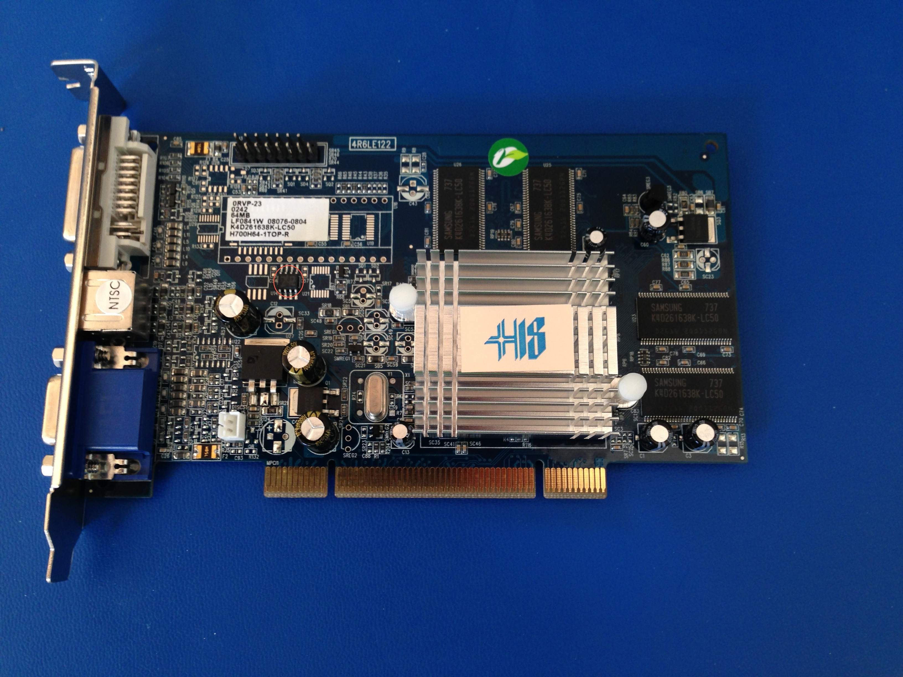

Swapping PCI Option ROMs
Prologue: Old Hardware Hacking
In my spare time in the Plausible Lab, I like to play with old Mac and video game hardware — it’s fun, appeals to my strong sense of nostalgia, and if I screw up, I won’t feel quite so terrible as I would if happened to destroy a piece of expensive modern hardware. Fortunately, I’ve yet to actually destroy anything, and actually have been able to fix a few things, like a failed Mac IIci power circuit.
In many cases, you can also find schematics for the hardware in question, if not actual vendor documentation. Official development manuals are available out there if you look around a bit, and crazy folks such as BoMarc Services sell reverse-engineered schematics for everything from the Super Nintendo to the Macintosh Quadra 840av.
This leads me to my small Friday evening project in getting a PC version of the Radeon 7000 64MB working on a PCI Power Macintosh, for which no 64MB cards were released. This requires desoldering, replacing, and reflashing the flash chip on the card, as recently documented by a friend of mine, Rob Braun.
PCI Option ROMs
Have you ever wondered how PCI cards are able to perform basic operations — such as accessing a disk, displaying graphics, or booting off the network — before their drivers have been loaded? Or why cards are platform specific, despite the fact that everyone is using standardized PCI interfaces?
The answer actually lies on the card itself, inside a bit of addressable flash memory called the “Option ROM”, which contains executable code that’s located and run at boot time. This code is responsible for interfacing with the underlying BIOS implementation, and providing the services required for disk, network, graphics, or similar access. Given where and when the code is running, there’s no real constraint — it could also display custom UI, or vend services other than what you might expect, such as a ‘kernel’ thatruns entirely from a PCI option ROM.
There are also security implications; malware that acquires sufficient privileges could re-image your PCI cards’ option ROMs to contain persistent code that re-infects the machine no matter how many times you re-image your system. One of the goals of the Secure Boot initiave is to require signing of firmware, preventing this sort of attack (… until another bug is found in the firmware responsible for validating the boot process).
The PCI option ROM is also why PCI cards are platform specific — the ROMs contain either native code, or an architecture neutral bytecode, and that code is targeted to the actual firmware API specification of the host architecture (e.g., BIOS, UEFI, or OpenFirmware).
On legacy Power Macintosh systems, a combination of Open Firmware bytecode (called FCode) and native PPC code is included on the PCI Option ROM to provide both boot-time and run-time drivers for cards; this approach of including the OS drivers is what allowed Mac OS graphics cards to be run without additional drivers being installed. On older Macs, the FCode is used at boot time to provide basic services required at boot time, and then the OS loads and uses Mac OS drivers loaded from the PCI option ROM at runtime.
This approach ties the hardware fairly closely to a specific operating system, and while this sort of driver bundling was the norm on Mac OS for years, modern systems tend to rely on installable drivers after boot time.
Converting a Radeon 7000 64MB
This leads us to the original goal, which was to get the PC version of the Radeon 7000 64MB card working on a PCI Macintosh. There was never a 64MB version of the card released, but there was a 32MB version of the card provided for Mac OS. Assuming that the drivers written for the 32MB card are compatible with the 64MB card, it should simply be a matter of reflashing the PCI Option ROM with the Mac OS drivers — something we can do using the vendor’s own flashing software.
Unfortunately, there’s just one hitch. The Mac ROM is 128KB, and the PC version of the card only shipped with a 64KB flash ROM. This was presumably done to save money; pennies add up, and the PC ROM only needs to provide basic BIOS services, which can fit easily within 64KB of flash. The Mac ROM actually needs to provide two different drivers; one in FCode, one for Mac OS, and these won’t fit on the PC cards’ smaller flash chip.
Thus, to re-image the card with Mac-compatible firmware, we need to desolder or clip the 64KB Flash chip from the PC card, solder in a new compatible 128KB flash chip, and then reflash the ROM using the vendor’s tools. Here’s the flash chip I replaced:
 The flash chip is circled in red
Replacing the chip turns out to be pretty easy. The original flash chip conforms to an industry standard pinout and package size, for which many compatible replacements are available. The chips are communicated with over the defacto standard SPI Bus (Serial Peripheral Interface Bus), and use a common wire protocol. The protocol itselfuses 24-bit addressing; in theory, there’s no issue with swapping out a smaller 64KB chip for a larger 128KB chip, and having the card address the additional space. I was able to find a compatible replacement for the original Atmel chip from Digi-Key.
The first step is to remove the previous flash chip. If preserving the chip is important to you, you might use hot air rework or similar to lift the chip without damaging it. Given that you can easily copy a PCI option ROM’s contents from a running system, there’s no real need to preserve the actual chip; I went the more destructive approach of clipping the leads using a pair of small flush cutters, and then removing the remaining solder and pins with solder wick.
With the chip removed, the next step is to solder in the replacement. Soldering surface-mount components can be a bit daunting at first, but I’ve found it’s actually quite a bit easier (and less time consuming) than working with through-hole. Lately I’ve been getting the hang of hot air rework using solder paste and the Hakko FM-206 we have in the lab, but for replacing this chip, I wanted to minimize the risk of heat damage to surrounding components.
My approach for resoldering the chip was to use a standard soldering iron with a “hoof” soldering tip. These tips have a broad, flat or concave tip that can be easily dragged over a set of pins. After tacking down opposing corners of the chip, you can simply drag the tip across the pins, letting surface tension wick the solder around the pins. I’d recommend watching the EEVBlog‘s video tutorial for more details on hand-soldering surface mount components, including drag soldering.
After dropping the card into my Power Mac 9600, I was able to reflash the new ROM using ATI’s tools. One reboot later, and I could sit in awe of System 7.6 running at 1920×1200 over DVI. Now I just need to get copy of Marathon running…
The Plausible Blog
Latest news and musings from the co-op.
Follow us: @plausiblelabs
Recent Articles
- PLCrashReporter Stewardship Moving to Microsoft September 12, 2019
- A New Home for VoodooPad December 14, 2017
- PLRelational: Query Optimization and Execution October 3, 2017
- Let's Build with PLRelational, Part 2 September 28, 2017
- Let's Build with PLRelational, Part 1 September 18, 2017